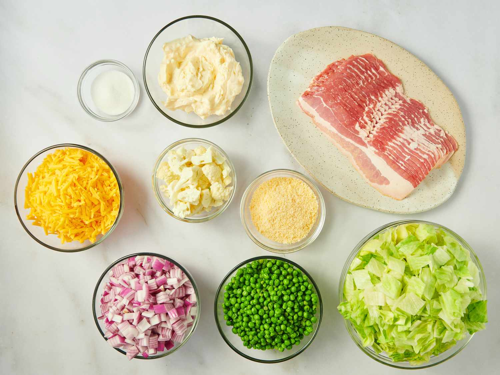
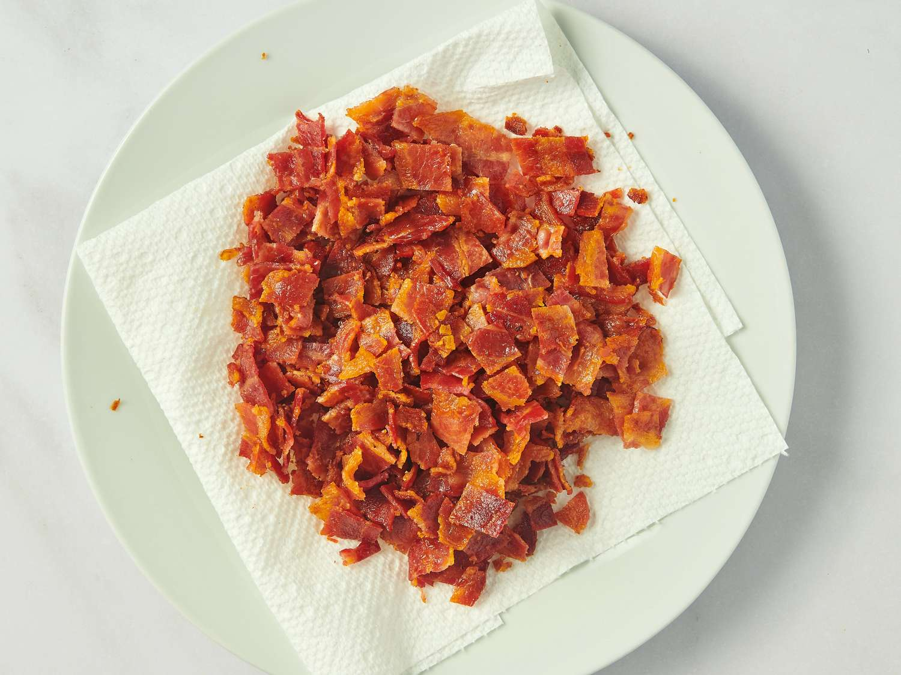
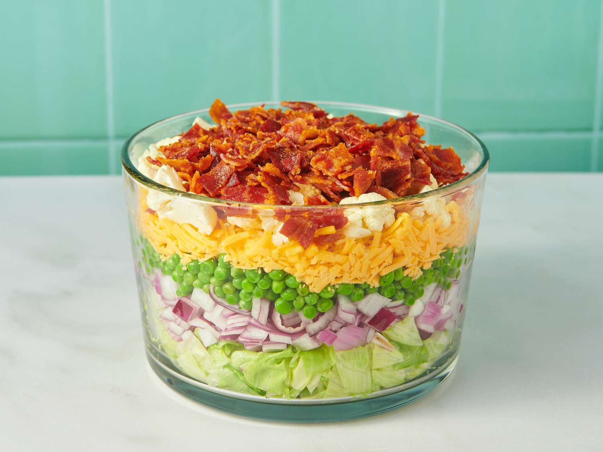
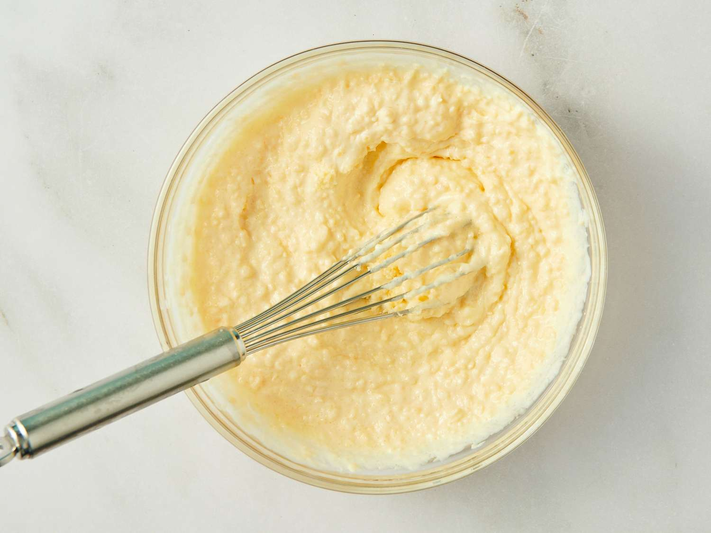
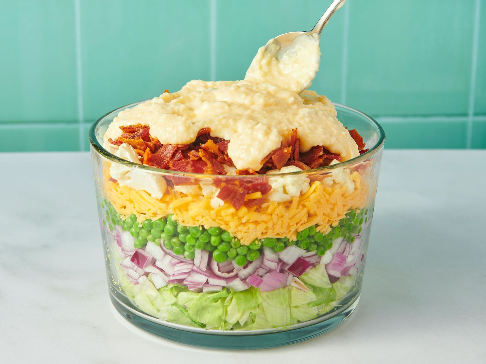

Seven Layer Salad

This 7-layer salad looks great in a large glass bowl. I usually make it with bacon, lettuce, red onion, pea, Cheddar cheese, and cauliflower but you can vary the type of onions, cheese, etc. There's never too much because everybody loves it!
15 mins
10 mins
25 mins
12
Ingredients
Salad
- 1 pound bacon
- 1 large head iceberg lettuce - rinsed, dried, and chopped
- 1 red onion, chopped
- 1 (10 ounce) package frozen green peas, thawed
- 10 ounces shredded Cheddar cheese
- 1 cup chopped cauliflowert
Dressing
- 1 ¼ cups mayonnaise
- ⅔ cup grated Parmesan cheese
- 2 tablespoons white sugar
Directions
Step 1
Gather all ingredients.

Step 2
Place bacon in a large skillet and cook over medium-high heat, turning occasionally, until evenly browned, about 10 minutes. Drain bacon slices on paper towels; crumble and set aside.

Step 3
To make the salad: Place chopped lettuce in a large glass dish or bowl; top with a layer of red onion, peas, shredded cheese, cauliflower, and bacon.

Step 4
To make the dressing: Whisk mayonnaise, Parmesan cheese, and sugar together in a bowl until smooth.

Step 5
Drizzle dressing over salad and refrigerate until chilled.

Step 6
Serve and enjoy!
Nutrition Facts (per serving)
387
Calories
33g
Fat
10g
Carbs
15g
Protein